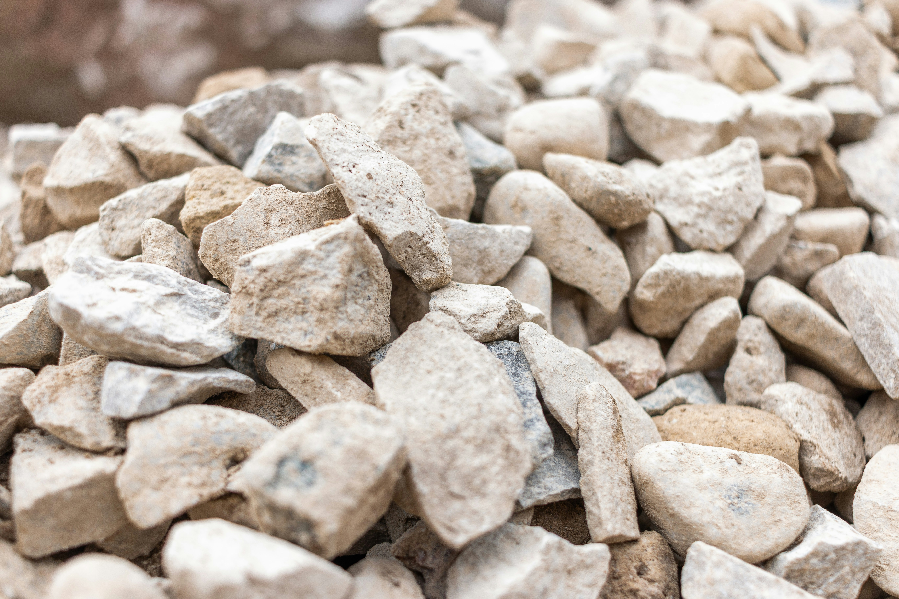

Illinois Web Toolkit
Example Pages
Rocks and Minerals of Illinois
Illinois has so long been known as the Prairie State that
it seems a most unlikely place in which to
collect rock and mineral specimens. But Illinois has a surprising wealth of rock and mineral resources,
not only to be collected as interesting specimens but
to be put to practical and profitable use.
The rich prairies that gave the state its nickname are themselves
derived from ancient rocks, worn and changed by millions
of years of action by weather, water, wind, plants, and animals.
Unmeasured depths of rock underlie the prairies, hills, and valleys,
and in some parts of the state are exposed in outcrops,
canyons, and river valleys. Boulders and gravel brought in by
the glaciers thousands of years ago are strewn over many parts
of the state.
Description of Rocks and Minerals
 Limestone
Limestone
The terms mineral and rock are often confused. They are
frequently used together and the materials they describe are
closely related. In general, a mineral is a naturally occurring
chemical element or compound formed by inorganic processes,
whereas a rock is a mixture of particles or grains of several minerals.
However, when we refer to mineral resources or industrial
minerals, we generally include materials that are technically
rocks—such as limestone, dolomite, shale—and also coal and
oil that are in fact organic substances. On the other hand, we
include in the rock category high purity sandstone that is composed
almost entirely of one mineral (quartz) and high purity
limestone that is composed largely of the mineral calcite.
Minerals
A few minerals are composed of only one element, such as
diamond (carbon) and native copper, but most minerals are chemical
compounds that contain several elements.
Most minerals grow into distinctive shapes if they are free
to grow. A familiar example is the formation of salt crystals that
grow on a saucer of evaporating salt water. The distinctive
shapes of crystals are called their habits, and the flat surfaces
that develop are called crystal faces, the angles of which may
be used to identify the mineral.

Limestone
Limestone outcrops are abundant in Illinois, especially along
the bluffs of the Mississippi, Ohio, and Illinois Rivers.
Limestone effervesces freely in dilute hydrochloric acid,
but dolomite must be powdered before it will effervesce. In nature,
limestones may be dissolved by percolating water containing
weak acid (such as carbonic acid, composed of water and
carbon dioxide). At many places in southern and southwestern
Illinois such solution of limestones has produced caves and
caverns.
Granite
Granite pebbles or boulders are the most common igneous
rocks found in glacial deposits in Illinois. They are not native
to the state but were brought here by the great ice sheets or glaciers
that advanced from southern Canada to cover much of northern
United States during Pleistocene time.
Native granitic rock probably lies very deep beneath the entire
state. It has been found in deep oil-test drillings along the
western and northern margins of Illinois.
Gabbro
Gabbro is another intrusive igneous rock, but it is heavier
and darker than granite. It is composed mainly of feldspar and
dark iron-bearing minerals that give the rock a dark color. It is
coarse grained and contains little or no quartz.
Like other igneous rocks found near the surface in Illinois,
gabbro was carried into Illinois by the glaciers and deposited as
glacial debris.
Rocks
Rocks, being mixtures of minerals, are more complex than
minerals and are therefore classified in a more complicated way.
The broadest grouping of rocks is based on the origin of the rock
rather than on the minerals that compose it. In this scheme all
rocks are divided into three general groups, igneous, sedimentary,
and metamorphic.
The igneous rocks are mentioned first because they are produced
directly from hot liquids that come from deep within the
earth. These hot liquids are essentially molten rock and are
called magmas. When they cool, the elements of the individual
minerals come together and crystallize, as water crystallizes
into ice on a winter day.
Porphyry
Porphyry is an igneous rock identified by its texture rather
than its mineral content, which is variable. Distinct crystals
(phenocrysts) of minerals are embedded in a matrix of fine-grained
rock. The phenocrysts formed before the main mass of
the rock hardened.
Any igneous rock may have a porphyritic variety, such as
granite porphyry and rhyolite porphyry, although porphyries are
most likely to form in association with fine-grained igneous
rocks.
Porphyry is found in Illinois only in glacial drift.
Basalt
Basalt is the most widely distributed volcanic rock. Pyroxene,
feldspar, magnetite (an iron ore), and in some instances
olivine, biotite, and hornblende, compose this rock. The dark
green, gray, or black color is due to the dark-colored minerals
that make up much of the rock. The minerals in basalt are fine
grained and are packed closely together. Phenocrysts of olivine,
pyroxene, and hornblende may be present. Basalt is easily identified
by its color and fine-grained texture.
The glaciers brought basalt into Illinois along with other
igneous rocks.
Peridotite
Peridotite is the only igneous rock native to Illinois that
crops out at the surface. It is found as dikes (irregular veins)
or sills (thin sheets) that were formed when molten rock from
deeper in the earth intruded into cracks and fissures in the bedrock
of southeastern Illinois (Hardin, Pope, Gallatin, and Saline
Counties). Peridotite pebbles and boulders also may be found in
the glacial drift.
The individual atoms of a crystal always arrange themselves
in the same way, so that each mineral breaks characteristically.
Some minerals break more easily in particular directions and present
a flat, smooth surface. This characteristic is called cleavage
and the cleavage surfaces, although sometimes confused
with crystal faces, may be useful for identifying a particular
mineral. The manner in which a mineral breaks when the broken
surface does not include cleavage surfaces is called its fracture,
and this too may give a clue to the identification of the mineral.
There are other physical features useful in identifying minerals.
Some of them, such as color, are quite obvious. The
color of the powder left when a mineral is scraped on a rough,
white surface, such as unglazed porcelain or tile, is called
streak. Luster refers to the brightness of light reflected from the
mineral’s surface. Transparency and translucency refer to the
mineral’s ability to transmit light, and tenacity is a measure of
its toughness.
Two special physical characteristics of minerals are important
to their identification—specific gravity and hardness.
Specific gravity simply means the ratio of the weight of the mineral
to an equivalent volume of water. For example, if a mineral
has a specific gravity of 4, then a cubic inch of the mineral
weighs as much as 4 cubic inches of water.
Hardness is measured by the ability of one mineral to scratch
another, and a set of ten standard minerals has been selected
for determining this characteristic. The listing below, from soft
to hard, is known as Mohs scale.
As shown by the diagrammatic rock column (fig. 2), rocks
placed in the divisions called early Cenozoic and Mesozoic are
next in age to the Pleistocene. The map (fig. 1) shows that the
Cenozoic and Mesozoic rocks occur only in the extreme southern
tip of Illinois because only that part of Illinois was covered by a
northward extension of the forerunner of the Gulf of Mexico in
which the deposits of sand, gravel, and clay were laid down.
The next older division of Illinois rocks is called Pennsylvanian—or
“Coal Measures”—because during the last century
they were first extensively described by geologists working in
Pennsylvania.
The Pennsylvanian is one of our most important groups of
rock strata because it contains all of our minable coal beds, as
well as important deposits of limestone, shale, clay, sandstone,
and some oil and gas. The Pennsylvanian rocks are very widespread
in Illinois, occurring under the glacial drift from depths
of a few feet to several hundred feet throughout about two-thirds
of the glaciated area (fig. 1).
Next below the Pennsylvanian are the Mississippian rocks.
We in Illinois are particularly interested in this division of rocks
because they take their name from the excellent exposures along
the Mississippi River valley in western Illinois, southeastern
Iowa, and eastern Missouri. They are composed of extensive
beds of limestone and cherty limestone, sandstone, and shale.
Mississippian rocks are of great economic importance in the
structural area known as the Illinois Basin, where they are the
most important oil producing rocks. They also contain our fluorspar
deposits and along the valley bluffs are an excellent source
of limestone for quarrying.
Rocks older than the Mississippian—except for small areas
along the Mississippi and Illinois River valleys—are found at
the surface only in the northern quarter of the state and locally
in Hardin County near the southern tip of the state. They are
nonetheless economically important because from these older
rocks are produced lead and zinc, some oil and gas, silica sand,
limestone, dolomite, and shale.
On the generalized rock column (fig. 2) these older rocks are
grouped into two units. The uppermost contains the Devonian and
Silurian and the lower contains the Ordovician and Cambrian. In
general they include dolomite, limestone, and shale, with sandstone
at several places, especially in the lower unit.
Minerals
A few minerals are composed of only one element, such as
diamond (carbon) and native copper, but most minerals are chemical
compounds that contain several elements.
Most minerals grow into distinctive shapes if they are free
to grow. A familiar example is the formation of salt crystals that
grow on a saucer of evaporating salt water. The distinctive
shapes of crystals are called their habits, and the flat surfaces
that develop are called crystal faces, the angles of which may
be used to identify the mineral.
The individual atoms of a crystal always arrange themselves
in the same way, so that each mineral breaks characteristically.
Some minerals break more easily in particular directions and present
a flat, smooth surface. This characteristic is called cleavage
and the cleavage surfaces, although sometimes confused
with crystal faces, may be useful for identifying a particular
mineral. The manner in which a mineral breaks when the broken
surface does not include cleavage surfaces is called its fracture,
and this too may give a clue to the identification of the mineral.
There are other physical features useful in identifying minerals.
Some of them, such as color, are quite obvious. The
color of the powder left when a mineral is scraped on a rough,
white surface, such as unglazed porcelain or tile, is called
streak. Luster refers to the brightness of light reflected from the
mineral’s surface. Transparency and translucency refer to the
mineral’s ability to transmit light, and tenacity is a measure of
its toughness.
Two special physical characteristics of minerals are important
to their identification—specific gravity and hardness.
Specific gravity simply means the ratio of the weight of the mineral
to an equivalent volume of water. For example, if a mineral
has a specific gravity of 4, then a cubic inch of the mineral
weighs as much as 4 cubic inches of water.
Hardness is measured by the ability of one mineral to scratch
another, and a set of ten standard minerals has been selected
for determining this characteristic. The listing below, from soft
to hard, is known as Mohs scale.
- Talc
- Gypsum
- Calcite
- Fluorite
- Apatite
- Orthoclase
- Quartz
- Topaz
- Corundum
- Diamond
A rough measure of hardness can be made by using handy
objects. Your fingernail has a hardness ranging from 2 to 3, a
penny is a little harder than 3, window glass ranges from less
than 5 to approximately 6 in hardness, and a knife blade is
generally in the range of 5 to 6.
Rocks
Rocks, being mixtures of minerals, are more complex than
minerals and are therefore classified in a more complicated way.
The broadest grouping of rocks is based on the origin of the rock
rather than on the minerals that compose it. In this scheme all
rocks are divided into three general groups, igneous, sedimentary,
and metamorphic.
The igneous rocks are mentioned first because they are produced
directly from hot liquids that come from deep within the
earth. These hot liquids are essentially molten rock and are
called magmas. When they cool, the elements of the individual
minerals come together and crystallize, as water crystallizes
into ice on a winter day.
Different minerals crystallize, or “freeze”, at different temperatures
so that if the magma cools slowly some individual
grains have opportunity to grow larger than others. If the magma
cools quickly, as does lava or basalt, the separate mineral grains
will be small. Igneous rocks are classified on the basis of the
size and arrangement of the individual crystals and the kinds of
minerals present.
The glacial drift in Illinois contains many pieces of igneous
and metamorphic rocks, but most of the rocks native to Illinois
are sedimentary.
Some sedimentary rocks are made up of weathered fragments
of other rocks that have been moved by rivers, waves, winds, or
glaciers. These sediments have been deposited and later compacted
or cemented by the mineral matter carried in water moving
through them. Such sedimentary rocks are called clastic (meaning
broken pieces) rocks, as opposed to those formed by chemical
precipitation from water and those that consist of fossil
remains.
Clastic sedimentary rocks are classified first on the basis
of the size of the grains of gravel, sand, silt, and clay of which
they are composed; on the type of deposition, such as glacial
drift and wind-blown silt or loess, that produced them; and then
on the basis of their mineral composition. Rocks such as gypsum
and some of our limestones were formed by chemical precipitation
from sea water.
Metamorphic rock literally means rock that has changed
form. The change of form has been caused by heat and pressures
that occur below the surface of the earth or by heat from upward
moving hot magmas or melted rocks. Examples of metamorphic
rocks are found in Illinois as boulders and pebbles in the glacial
drift.
Descriptions of the rocks and minerals represented by specimens
in the Geological Survey’s rock and mineral sets follow.
The numbers preceding the descriptions correspond to the numbers
on the specimens in the sets.
Although the set includes the rocks and minerals that are
most commonly found in Illinois, many others can be collected.
For that reason, following the descriptions is a key for identifying
other Illinois minerals and rocks.
As a further aid to the beginner and the amateur, a list of
equipment useful in making a rock and mineral collection is given
at the end of the book.
Granite
GRANITE is one of the most widespread intrusive (originating
deep within the earth) igneous rocks. It consists chiefly of feldspar
and quartz with small amounts of biotite, muscovite, or
hornblende. Most granite is light colored, but it can be white,
gray, yellow, pink, or deep red. The texture ranges from medium
grained to coarse grained.
Granite pebbles or boulders are the most common igneous
rocks found in glacial deposits in Illinois. They are not native
to the state but were brought here by the great ice sheets or glaciers
that advanced from southern Canada to cover much of northern
United States during Pleistocene time.
Native granitic rock probably lies very deep beneath the entire
state. It has been found in deep oil-test drillings along the
western and northern margins of Illinois.
GABBRO (2)
GABBRO is another intrusive igneous rock, but it is heavier
and darker than granite. It is composed mainly of feldspar and
dark iron-bearing minerals that give the rock a dark color. It is
coarse grained and contains little or no quartz.
Mineral crystals of gabbro are especially tightly interlocked,
making the rock very difficult to break. Weathered gabbro is a
rusty color on the surface, because the iron in gabbro changes
color just as a piece of metallic iron becomes coated with rust
when left out of doors.
Like other igneous rocks found near the surface in Illinois,
gabbro was carried into Illinois by the glaciers and deposited as
glacial debris.
PORPHYRY (3)
PORPHYRY is an igneous rock identified by its texture rather
than its mineral content, which is variable. Distinct crystals
(phenocrysts) of minerals are embedded in a matrix of fine-grained
rock. The phenocrysts formed before the main mass of
the rock hardened.
Any igneous rock may have a porphyritic variety, such as
granite porphyry and rhyolite porphyry, although porphyries are
most likely to form in association with fine-grained igneous
rocks.
Porphyry is found in Illinois only in glacial drift.
BASALT (4)
BASALT is the most widely distributed volcanic rock. Pyroxene,
feldspar, magnetite (an iron ore), and in some instances
olivine, biotite, and hornblende, compose this rock. The dark
green, gray, or black color is due to the dark-colored minerals
that make up much of the rock. The minerals in basalt are fine
grained and are packed closely together. Phenocrysts of olivine,
pyroxene, and hornblende may be present. Basalt is easily identified
by its color and fine-grained texture.
The glaciers brought basalt into Illinois along with other
igneous rocks.
PERIDOTITE (5)
PERIDOTITE is the only igneous rock native to Illinois that
crops out at the surface. It is found as dikes (irregular veins)
or sills (thin sheets) that were formed when molten rock from
deeper in the earth intruded into cracks and fissures in the bedrock
of southeastern Illinois (Hardin, Pope, Gallatin, and Saline
Counties). Peridotite pebbles and boulders also may be found in
the glacial drift.
Peridotite ranges from very fine grained to medium grained
and has an even texture. It is dark gray to greenish gray, depending
on the minerals present. In general it is composed of
olivine, hornblende, pyroxene, and mica, with little or no feldspar
or quartz.
Gneiss and Schist
Gneiss
GNEISS is a metamorphic rock composed of roughly parallel
bands of minerals. It is medium grained to coarse grained and
is generally light in color. The names given to gneiss emphasize
a distinctive texture or mineral or indicate composition. For example,
biotite gneiss emphasizes a mineral, and granite gneiss
indicates the composition of the rock.
Schist
SCHIST is much like gneiss but is fine grained and has a
thinly layered structure that makes the rock break with a wavy
surface. Some common types of schistose rocks are talc schist,
chlorite schist, and hornblende schist. As the names indicate,
they are characterized by their dominant mineral. Mica schist
may be formed by the metamorphism of either sedimentary or igneous
rocks.
Gneiss and schist are not native to Illinois but are found in
the glacial drift.
CONGLOMERATE (7)
CONGLOMERATE is a sedimentary rock made up of pebbles
or other rock fragments cemented in a background or matrix of
finer material, generally
silica, calcium carbonate,
clay, iron oxide, or a
mixture of these substances.
The rounded
rock fragments have
been worn by being
rolled in streams and
along beaches.
If the pebbles embedded
in the matrix are sharp and
angular, freshly broken and not
worn, the rock is called breccia
and is generally found near the place where the fragments originated.
Conglomerate or breccia may be made up of any type of
rock or mineral, most commonly durable material such as chert,
quartz, quartzite, granite, and gneiss.
In Illinois, conglomerates commonly are found at the base of
sandstone formations and as beds in the lower “Coal Measures.”
They also are found in some gravel deposits.
SANDSTONE (8)
SANDSTONE is a clastic sedimentary rock consisting of
sand-sized grains (one sixty-fourth to one-sixteenth inch in
diameter) held together by a cementing material. As sandstones
become finer grained they grade into siltstones; as they become
coarser grained they grade into conglomerate. The shape of sand
grains in sandstones ranges from rounded to angular.
Quartz is the dominant mineral in sandstone, but other rock
grains and mineral grains (especially chalcedony, feldspar, muscovite,
hornblende, magnetite, or garnet) generally are present.
Sandstones are commonly cemented by carbonates, silica,
iron oxides, or clays. Most sandstones are a shade of gray or
brown, but the color may vary from gray or white to yellow,
brown, or red. The color probably depends on the type of cement,
the amount of organic material present, and the amount and degree
of oxidation of iron in the rock.
Durability of sandstones depends largely on the character
of the cement. Some sandstones crumble easily, but others, especially
those cemented by iron oxides or silica, are tough and
durable. Sandstones break around the grains, giving the broken
surface a granular appearance.
Sandstone crops out in many places throughout much of the
state. In LaSalle and Ogle Counties, large tonnages of sand are
mined from the St. Peter Sandstone and sold for a variety of uses,
including abrasive sand, molding sand, and sand for making
glass. In extreme southern Illinois attractively colored sandstones
have been quarried for building stone.
QUARTZITE (9)
QUARTZITE is a metamorphic rock that originally was quartz
sandstone. Quartzites are produced by intense heat and/or
pressure, probably aided by hot silica-bearing solutions. The
quartz grains may be so closely interlocked that individual grains
are no longer recognizable. The rock fractures conchoidally
through both the grains and cement, so the broken surface, unlike
that of sandstone, is smooth and may even be glassy like
quartz.
Color depends upon the amount and kind of impurities present.
A quartzite that is all quartz is white or gray, but iron or
other elements may change the color to shades of purple, yellow,
brown, or red. Quartzite is a very resistant, hard rock and cannot
be scratched by a knife.
Quartzite is abundant as boulders and pebbles in glacial
drift of Illinois, having been brought into the state during the
“Ice Age.”
SHALE (10)
SHALE is a common and important sedimentary rock composed
of compacted clay or mud. It is so fine grained that the minerals
forming it generally cannot be identified without the aid of X-ray.
Shales are composed mainly of clay minerals but, like other
sedimentary rocks, generally include other minerals. Shales
containing calcium carbonate are called calcareous shales. Most
shales contain silt or sand particles; if silt or sand is present
in large quantity, the rock is called silty shale or sandy shale.
If mica minerals are present in quantity in a shale it is called
micaceous shale.
The particles of most clay minerals are thin and flat and
overlap each other.
Shales have a wide range of colors but most of those in Illinois
are gray. A gray, black, or blue-gray color is caused by
organic matter in the shale; shades of red, brown, yellow, or
green are caused by iron compounds.
Shale is widely distributed in Illinois, especially in “Coal
Measures” rocks, and is used in manufacturing bricks, drain
tile, building tile, and lightweight aggregate.
CLAY (11)
CLAY is an unconsolidated rock made up of a group of hydrous
aluminum silicate minerals, of which chlorite, montmorillonite,
kaolinite, and illite are the most abundant. These minerals
are formed by the weathering or alteration of other rocks
and minerals.
Clays are very fine grained and their minerals have tiny, flat
crystals that can be distinguished from each other only by laboratory
methods. Although clays may appear to be similar, their
compositions vary greatly.
Some clays are white, but most are colored by iron compounds
and organic matter. Wet clays have an earthy odor and
generally are slick and plastic, but dry clays are relatively hard
and are greasy to the touch.
Clays are abundant in Illinois, especially in soils, in
shales, and as clay deposits. In Illinois the underclays that
occur beneath coal beds are particularly well suited to the manufacture
of bricks, pottery, stoneware, and drain tile.
LIMESTONE (12)
LIMESTONE is a sedimentary rock composed of particles of
calcite (calcium carbonate). The crystals may range from fine to
coarse. Many limestones contain other minerals, such as chert,
clay, or sand, and in some places they grade into dolomite (calcium
magnesium carbonate).
Many limestones are white or gray. Yellow or brown shades
are caused by iron oxide impurities and dark gray to black colors
by organic matter.
Limestones form in various ways. Some are deposited when
calcium carbonate precipitates from solution; others are formed
when the shells or skeletons of organisms such as brachiopods,
clams, and corals accumulate on a sea floor. If such fossils
are very abundant, the rock is called fossiliferous limestone.
Limestone composed of tiny, rounded concretions is called oolite
or oolitic limestone.
Limestone effervesces freely in dilute hydrochloric acid,
but dolomite must be powdered before it will effervesce. In nature,
limestones may be dissolved by percolating water containing
weak acid (such as carbonic acid, composed of water and
carbon dioxide). At many places in southern and southwestern
Illinois such solution of limestones has produced caves and
caverns.
Limestone outcrops are abundant in Illinois, especially along
the bluffs of the Mississippi, Ohio, and Illinois Rivers.
Limestone has many uses. It is used for building stone,
road surfacing, railroad ballast, in the manufacture of portland
cement, and, if of high purity, for making lime and chemicals
and as a flux in smelting metals. It also is used, as agricultural
limestone, to add calcium to the soil.
PEAT (13)
PEAT is produced by the partial decomposition of plants that
accumulate, with varying amounts of mineral matter, in old
ponds, swamps, and lakes, and in abandoned channels in valley
bottoms along many rivers and streams. Peat may be an early
stage in the formation of coal.
Peat ranges from light to dark brown, the color, decomposition,
and compaction increasing with depth in the deposit. Some
of the plant remains are clearly distinguishable and appear as
fibrous fragments held together by the fine peat particles. The
type of peat common in Illinois has a high water content. Before
it is dried it is soft and spongy to the touch; upon drying, it
loses much water and becomes harder.
Peat is used as a fuel in some parts of the world, but its
heating value is low compared to that of coal. It burns with a
long flame and leaves a great deal of ash because of the silt and
sand that were buried with the vegetation. Peat and peat moss
are used chiefly as an absorbent, as stable litter, as insulating
and packing material, and by gardeners to increase the water-holding
capacity of soils.
Peat is found in many places in Illinois but the largest deposits
are in northeastern Illinois.
COAL (14)
COAL, an organic stratified rock, is formed from accumulated
plant material and partially decayed plants that were buried
during the “Coal Measures” period in Illinois more than 200 million
years ago.
Sediments deposited over the peat-like organic material
compacted it. Chemical changes gradually took place and resulted
in the loss of water and gases, leaving a higher percentage
of carbon than the original material contained.
The amount of such change that has taken place determines
the rank of the coal. The lowest ranks are called lignite, the
intermediate group is called bituminous (soft) coal, and coals of
the highest rank, with the highest carbon content, are called
anthracite (hard coal). Mineral matter, such as shale, clay, or
pyrite, generally is present in the coal and becomes ash when
the coal is burned.
Most coal mined in the United States is bituminous coal. It
is black, brittle, breaks into angular blocks, has a shiny luster,
and generally shows a banded structure.
Coal mining is an important industry in Illinois, and the
state contains the largest known reserves of bituminous coal in
the United States. Minable coal beds underlie about two-thirds
of the state. As many as 20 different coal beds have been mined
in Illinois, the most important being the Herrin (No. 6) and the
Springfield (No. 5) or Harrisburg (No. 5). The coal in most mining
areas averages 5 to 7 feet thick and in places attains a thickness
of 15 feet.
In underground mines the coal is approached by vertical or
inclined shafts. In open cut, or strip, mines all of the overlying
material (overburden) is removed, leaving the coal exposed.
Coal as much as 100 feet deep is now being strip mined in Illinois.
Illinois coal is now used mainly for generating electric power,
for industrial purposes, and for heating. In industry, coal
is used extensively for power, heating, burning cement, firing
clay products such as brick, tile, pottery, porcelain, and china,
and making coke.
Certain Illinois coals when mixed with coal from the eastern
part of the United States, produce metallurgical coke for making
steel. Gases, oils, and tars derived in processing coal for coke
have been used for making many chemical products, including
dyes, perfumes, explosives, medicines, insecticides, plastics,
and road tar.
PETROLEUM (15)
PETROLEUM (crude oil) is classed as a mineral resource although
it is a liquid hydrocarbon and not technically a mineral
or rock. It is, however, found in the pores and fractures of
rocks. The color of crude oil ranges from yellow through green
and brown to black.
- Arch (anticline)
- Gas
- Porous rock
- Nonporous rock
- Oil saturated rock
- Water
- Break (fault)
- Nonporous rock
- Oil saturated porous rock
- Water saturated porous rock
- Trap formed by change in character of rock
- Water
- Nonporous rock
- Porous rock
Petroleum had its origin in the
plants and animals buried in ancient
sediments. The organic matter changed
slowly into the complex mixture of hydrogen
and carbon compounds that is
petroleum.
Because gas is lighter than oil,
and oil in turn lighter than water, gas
and oil move upward in a porous rock
containing all three. Gas moves to
the highest position with oil next below
and water in the lowest part of the
rock. Oil pools exist where geologic
barriers have stopped the movement of
gas and oil.
Arches (upward folds or anticlines),
breaks (faults), and lateral
changes from porous to nonporous rock
are geologic features that serve to localize
oil pools within the reservoir
rock.
Petroleum is obtained by drilling
wells into the reservoir rock. Gas that is free or dissolved in
the petroleum expands as pressure is released when the well is
drilled and drives the oil to the well. Water in the reservoir
rock also acts as a driving force. When this natural pressure is
no longer effective, other methods (secondary recovery) are used
to recover the oil remaining in the reservoir.
Porous sandstones and limestones are the oil-bearing rocks.
Illinois also has deposits of oil shale from which petroleum may
be produced in the future.
Thousands of products are derived from petroleum, including
gasoline, kerosene, naphtha, lubricating oils and waxes, medicinal
oils, salves, heavy fuels, road oils, tar, and asphalt.
GLACIATED PEBBLES (16)
GLACIATED PEBBLES are small stones whose shapes have
been altered by the grinding action of a glacier. Such pebbles
commonly have at least one flattened side that shows scratches
(called striae). The striae were produced when the pebbles were
pushed over bedrock or ground against other pieces of rock.
Glaciers tore fragments from the bedrock over which they
moved and the fragments accumulated in, on, and under the mass
of ice. The rock fragments were transported, some of them far
from their source, and were deposited as the glacier moved along
or when the ice melted.
Soft rocks like limestone and dolomite are easily scratched,
but soft rocks cannot make grooves in hard igneous and metamorphic
rocks. Therefore soft rocks have more striae.
Glaciated pebbles can be found in deposits in many parts of
the state, especially in northeastern and east-central Illinois.
However, many deposits near the surface have been weathered
and striae have been destroyed. An especially good place to
look for striated pebbles is in quarries and strip mines where
glacial drift overburden has been removed. Pebbles found in
such deposits show good striae for they are but little weathered.
SILICA SAND (17)
SILICA SAND is the commercial name for sand composed almost
entirely of grains of quartz. Sand of this kind is mined in
Illinois from the St. Peter Sandstone in LaSalle and Ogle Counties.
The coarser grains of the sand are characteristically rounded
and frosted. The frosting causes the sand to look white.
Illinois silica sand has many uses. It is used just as it is
mined for molding sand in which metal castings are made, for
lining industrial furnaces, and for many other purposes. Some
of the sand is washed to remove the small amount of impurities
present. The washed sand is used for such purposes as making
glass, for grinding plate glass smooth, for sand blasting, for
molding metal, as fracturing sand to increase the production of
oil wells. Some silica sand is ground to a fine powder and used
as a fine abrasive, as a filler in paint, and as an ingredient in
pottery, glazes, and enamel.
A specially prepared St. Peter sand, known throughout the
world as Standard Ottawa Testing Sand, is used to test the strength
of cements and as a laboratory standard in physical tests of other
sands.
MOLDING SAND (18)
MOLDING SAND is a mixture of sand and clay or other bonding
material and is used to make molds in which metal is cast
into various useful shapes. There are two kinds of molding
sands, synthetic and natural bonded. The first is an artificial
mixture of silica sand and clay; the second is a naturally occurring
mixture of sand and a bonding material.
For casting, molding sand is first moistened with water and
shaped into a mold of the metal part to be reproduced. The mold
is then allowed to dry and the molten metal poured into it. The
bonding material in the sand must be strong enough to keep the
mold in shape during these operations.
Natural bonded molding sand is produced in Fayette, Bond,
Bureau, Carroll, Kankakee, and Rock Island Counties, Illinois.
TRIPOLI (19)
TRIPOLI, called amorphous silica in southern Illinois, is a
white or light brown, powdery substance that rubs off on the
hands like chalk. It consists mostly of very small particles of
quartz that result from the weathering of calcareous chert or
highly siliceous limestone.
It is finely ground and used as “white rouge” for polishing
optical lenses, as a filler in paints, in making ceramic products,
as a component of buffing compounds, and as a fine abrasive.
Tripoli occurs in Alexander and Union Counties and is milled
at Elco and Tamms in Alexander County.
FULLER’S EARTH (20)
FULLER’S EARTH is clay or silty clay material that contains
very fine silica. It is soft, nonplastic, opaque, has a greasy
feel when wet, and does not readily break up in water. Its color
varies from blue-gray to yellow or buff.
Fuller’s earth is valuable for its unique property of absorbing
and decolorizing substances. The material was first used
to “full” or remove grease from woolen cloth, hence its name.
It also has been used to filter and bleach mineral and vegetable
oils by absorbing dark organic matter.
In Pulaski County in extreme southern Illinois the Porter’s
Creek Formation contains deposits of clay that were at one time
the source of fuller’s earth and still afford clay whose absorbent
properties make it useful as litter and as sweeping and cleaning
compound.
QUARTZ (21)
QUARTZ is the most common of all minerals, making up about
12 percent of the earth’s crust. There are two main types of
quartz—crystalline quartz and dense, crypto-crystalline (submicroscopic)
quartz. Many
dense varieties occur in
Illinois, probably the most
common are chert or flint.
Crystals of quartz are
typically six-sided, elongated,
have sharply pointed
pyramid-like ends, and
are apt to grow together
forming twins. Good crystals
are rare in Illinois,
and the crystal structure
is not apparent in the commonly
occurring grains and
masses.
Quartz is brittle and
hard. It may be colorless
or tinted, transparent or
translucent, but more commonly
it is white and nearly
opaque. Transparent quartz looks much like ordinary glass,
but it scratches glass easily. It has a glassy to brilliant luster
and breaks irregularly or with a good conchoidal fracture.
Some varieties of quartz that are used for semiprecious gems
are chalcedony, agate, onyx, and jasper. Chalcedony is waxy,
smooth, generally translucent, white to gray, blue, brown, or
black. Agate is a form of chalcedony that has a mottled or variegated
banded appearance and may be yellow, green, red, brown,
blue, gray, or black. Onyx is agate with parallel bands that as
a rule are brown and white or black and white. Jasper, an impure
opaque quartz, generally is red.
Quartz occurs as rock crystal (colorless, transparent),
milky quartz (white, nearly opaque), and smoky quartz (smoky
yellow to gray or brown) in geodes from the Warsaw and Keokuk
Limestones of the Nauvoo-Hamilton-Warsaw area and as vein
and cavity fillings associated locally with fluorite, sphalerite,
and galena in extreme southern Illinois. It also occurs as vug
(cavity) fillings in limestones and sandstones.
FELDSPAR (22)
FELDSPAR is the name applied to a group of minerals that
are the second most common of all the earth’s minerals. All feldspars
are composed of aluminum, silicon, and oxygen, combined
with varying amounts of one or more metals, particularly potassium,
sodium, calcium, and lithium.
The minerals are hard, have a smooth glassy or pearly luster,
and cleave along two planes nearly at right angles to each
other. Feldspars are fairly light weight. The streak is white,
but the color of the mineral is highly variable, although potassium
and sodium-bearing feldspar are commonly white or pink
and most plagioclase feldspar is gray.
Feldspars are essential parts of the crystalline igneous
rocks. Their decomposition products are present in most soils.
In Illinois relatively small feldspar crystals can be found associated
with quartz and other minerals in granite and gneiss boulders
and pebbles in glacial drift.
MICA (23)
MICA is the name of a family of complex aluminum silicate
minerals that can be split easily into paper-thin, flexible sheets.
If broken across the grain at right angles to the flat, smooth surface
they fracture raggedly. In a single mica crystal the sheets
range from more or less transparent to translucent and are arranged
one on top of another like a deck of cards.
Micas are tough and somewhat elastic, soft enough to be
split and scratched by a fingernail, and are light weight. They
have a nonmetallic, glassy or pearly luster, although yellow
mica may appear to be metallic. Color and streak depend upon
the chemical composition of the mineral. Muscovite, or white
mica, contains potassium and makes a colorless or white streak.
Biotite, or black mica, contains iron and magnesium and is commonly
dark green or black, although it may be shades of yellow
or brown; its streak is uncolored.
Mica is abundant as tiny, shimmering flakes in Illinois
sands, sandstones, and shales (which are then said to be micaceous).
It also is common in many varieties of igneous and
metamorphic rocks. White or yellow flakes may show a brilliant
luster and may be mistaken for silver, platinum, or gold, but
those minerals are heavy and malleable whereas mica is not.
CALCITE (24)
CALCITE, a common rock-forming mineral, consists of calcium
carbonate. The mineral is white or colorless, but impurities
may tint it shades of yellow or gray. Transparent calcite is more
rare than the tinted varieties.
Transparent calcite possesses the property of double refraction;
an image appears double when viewed through a calcite
cleavage block.
Calcite has a glassy luster, its streak is white or colorless.
The mineral is of medium hardness and can be scratched by a
penny or a piece of window glass but not by the fingernail. It is
fairly light weight and effervesces freely in cold dilute hydrochloric
acid.
Calcite has a variety of crystal forms but in Illinois flattened
block-shaped crystals and elongate crystals with tapering
points (“dogtooth spar”) are the most common. When broken,
calcite cleaves into six-sided blocks called rhombs.
Crystals of calcite are found in Illinois as linings in geodes
in certain limestones and shales, especially in the Nauvoo-Hamilton-Warsaw
area, and as crystalline masses in limestone
and dolomite. Small amounts of clear crystalline calcite are associated
with various ores in northwestern and extreme southern
Illinois.
Calcite is the principal mineral in limestones and occurs as
a component of many concretions.
FLUORITE (25)
FLUORITE, or fluorspar, is made up of the elements calcium
and fluorine. The mineral is easily identified by its perfect
cleavage, color, and hardness.
It occurs in cubic crystals that may be twinned but is more
often found as irregular masses. It can be split into diamond-shaped,
eight-sided forms (octahedrons). Fluorite is commonly
gray, white, or colorless, but it may be green, blue, purple,
pink, or yellow. The streak is colorless and the luster glassy.
It can be scratched by a knife or a piece of window glass, is
fairly light weight, and is transparent to translucent.
Extensive deposits of fluorite, one of Illinois’ important
commercial minerals, occur in Hardin and Pope Counties in extreme
southern Illinois, where it is associated with galena,
sphalerite, calcite, barite, and other less abundant minerals.
Fluorite is used to make hydrofluoric acid, to form a fluid
slag in the production of iron and steel, in the manufacture of
aluminum, to make many chemical products, and in the ceramic
industry, in which it is used to make colored glass, enamels, and
glazes.
GYPSUM (26)
GYPSUM, hydrous calcium sulfate, is a colorless, transparent
to translucent mineral when pure, but it often is stained yellow
by impurities. It has a white streak, is soft enough to be
scratched by a fingernail, and is light weight.
Gypsum occurs in several forms. Selenite
is a coarsely crystalline, transparent variety,
composed of flat, nearly diamond-shaped crystals
that can be split easily into thin sheets,
have a glassy luster, and often grow together
to form “fishtail twins.” Crystals of selenite
occur in shales of the “Coal Measures” of
southern, north-central, and western Illinois,
and can be picked up at the surface.
Satin spar has crystals like silky threads
closely packed together, splits parallel to the
fibers, and is found as fillings in rock cracks
and as thin layers in shales. Massive gypsum
is granular.
Gypsum deposits occur deep underground
in Illinois but thus far have not been mined.
CHERT (27)
CHERT, one of the main forms of silicon dioxide, is cryptocrystalline
(submicroscopic) quartz. Most of the chert in Illinois
is white or gray, but impurities stain many deposits yellow,
brown, or even pink. Chert is so hard that it can scratch glass
and ordinary steel. It is fairly light weight, dense, opaque, and
brittle; the luster is dull.
Flint, a variety of chert, is generally dark colored, more
dense, may have a glassy luster and be transparent in thin
flakes. Both chert and flint have a smooth, curved (conchoidal)
fracture, but flint tends to break with thinner, sharper edges.
Indians used flint and chert to make arrow points and spearheads.
Chert occurs as rounded masses (nodules and concretions)
or as irregular layers in limestones and dolomites in northern,
western, southwestern, and southern Illinois. Because chert is
hard and more resistant to weathering than limestone or dolomite,
it often remains after the rest of the rock has weathered away.
Chert also is abundant in many glacial deposits because it
is hard and resists solution. Streams that flow through cherty
bedrock or glacial deposits carry pebbles along and concentrate
them as gravel in stream channels. Cherty stream gravels are
especially abundant in western and southern Illinois.
Brown chert gravels in the southern part of the state are
used for road gravel. Other deposits in extreme southern Illinois,
consisting of angular fragments of chert and a small amount
of clay (known locally as novaculite gravel) also are used for
road surfacing.
White and gray chert occur as massive bedrock deposits
several hundred feet thick in Union and Alexander Counties.
PYRITE AND MARCASITE (28)
PYRITE and MARCASITE are iron disulfide compounds. They
look much alike but have different crystal forms. Both are brittle,
hard, brassy yellow with metallic luster, and opaque. The
best distinguishing feature is crystal shape. The pyrite crystals
are cubes, but the marcasite crystals are blade- or needle-shaped.
Pyrite and marcasite have been mistaken for gold because
they are yellow and metallic and hence are sometimes referred
to as “fool’s gold”. They, however, are harder than gold, tarnish,
and leave a dark streak, whereas gold is soft, very heavy,
does not tarnish, and leaves a yellow streak. Gold is malleable,
but pyrite or marcasite are reduced to powder if they are pounded
and give off a noticeable odor of sulfur dioxide gas if they are
heated.
Pyrite and marcasite are found in many deposits in Illinois.
They occur as grains or larger masses in some clays, shales,
and limestones. They also occur with the lead and zinc ores of
northwestern Illinois and, in small amounts, with the fluorite
and associated minerals in the extreme southern part of the state.
Both pyrite and marcasite are common as surface coatings,
veins, and concretionary structures in coal and in dark shales
associated with coal. They are referred to as “coal brasses” or
“sulfur” when found as impurities in coal.
A potential use for pyrite and marcasite is in the manufacture
of sulfuric acid for industrial use. Coal brasses recovered
from Illinois coal have been so used.
LIMONITE (29)
LIMONITE is an iron oxide containing water and has a complex
chemical composition. The limonite found in Illinois may
be yellow, orange, red, brown, or black, but its streak is always
yellowish brown. The mineral may have a glassy or an
earthy luster. It may be too hard to be scratched by a knife.
It is of medium weight.
Limonite is common and occurs as concretions and cavity
fillings in sedimentary rocks, and as coatings on them, especially
sandstone. It also occurs as iron rust, as scum on stagnant
water, and it accumulates around rootlets in soils. Small
amounts color limestone, dolomite, clay, shale, sandstone, and
gravel. Some sands are firmly cemented by brown or black limonite
and look much like iron ore. Clays containing a high percentage
of limonite are called ocher.
In some states limonite is mined as an iron ore, and in Illinois
it was so used in Hardin County in the middle 1800’s, but
deposits are not large enough for profitable use now.
SPHALERITE (30)
SPHALERITE, zinc sulfide, is a major ore of zinc. It has a
resinous luster and a white, yellow, or brown streak. Illinois
sphalerite is generally yellow, yellowish brown, reddish brown,
or brownish black. It is of medium weight, brittle, can be
scratched by a piece of window glass but not by a penny. It is
commonly opaque but may be translucent on thin edges.
Sphalerite is mined with galena in northwestern Illinois and
in extreme southern Illinois with galena and fluorite. Small crystals
occasionally are found in limestones and as crystalline
masses in clay-ironstone concretions.
GALENA (31)
GALENA, lead sulfide, is the principal ore of lead. It is
steel gray, heavy, opaque, and has a bright metallic luster,
though the shiny surface may be dulled by a coating of lead carbonate.
It has a gray or black streak, is soft enough to mark paper,
and can be scratched by a penny. The cube-shaped crystals
readily break into cubic, right-angled fragments. Probably
the most obvious features of the mineral are its bright metallic
luster on fresh surfaces, high specific gravity, and cubic cleavage.
At many places galena is argentiferous (silver-bearing), but
Illinois galena is relatively unimportant for its silver content.
As a source of lead, however, it is an important commercial
product of the state.
Scattered pieces of galena are found at many places in Illinois.
Some occur in the glacial deposits, others occur as small
pockets and as crystals in limestones and geodes. In only
two areas of the state are deposits of commercial value. In
northwestern Illinois galena occurs in association with sphalerite;
in extreme southern Illinois it occurs in association with
fluorite and sphalerite.
CONCRETIONS (32)
CONCRETIONS are concentrations of inorganic sedimentary
material within other sediments. Minerals that commonly form
concretions are silica (in the form of opal, chert, chalcedony,
and quartz), calcite, siderite, pyrite, marcasite, and limonite.
Concretions may form either as the sediment around them
is forming or after the sediment around them has hardened. They
may be formed when water containing dissolved minerals seeps
through the sediment or rock and leaves a concentration of mineral
matter in a cavity or around a central particle (nucleus) such
as the remains of a plant or animal. Portions of rock may also
become firmly cemented by such mineral matter.
Concretions range in size from minute particles to objects
several feet in diameter. Shapes range from spheres to tubes.
Many are globular or lumpy-surfaced, some are smooth. Because
concretions generally are harder than the surrounding rock in
which they have formed, they do not weather away as readily and
may remain after the surrounding material has been eroded.
Concentrations of calcite are found in loess deposits. They
may look like bizarre, knobby figurines, and the Germans called
them loess kindchen (little children of the loess).
Ironstone concretions, especially common in many Illinois
shales, are formed by a local concentration of the mineral siderite
(iron carbonate) in the rock. The concretions found in
weathered outcrops commonly are partly or entirely weathered to
limonite. Some ironstone concretions grow together into odd
shapes. Mazon Creek ironstone concretions of northeastern
Illinois, world famous for their fossils, are sideritic. The concretions
are commonly covered with limonite, the result of oxidation.
Limonite concretions, generally with a high content of clay,
silt, or sand, occur in loess, shale, and sandstone.
Concretions of chert and other forms of silica are common in
limestones. In many places, because of their greater resistance
to weathering, lenses and nodules of chert protrude from the
beds.
Pyrite or marcasite occur as concretions or concretion-like
masses in some coal beds and in the black shales, sometimes
popularly called “slates,” above coal beds. Some other Pennsylvanian
clays and shales also contain concretions or coarsely
crystalline aggregates of these minerals.
GEODES (33)
GEODES are roughly spherical bodies that may be filled with
layers of minerals, lined with crystals, or both. The outer layer
of geodes found in Illinois as a rule is composed of chalcedony,
a form of finely crystalline silica.
Geodes differ from concretions in that they form inward from
the outer shell, whereas concretions develop outward from a
center. Even if geodes have been completely filled by mineral
matter, their inward-projecting crystals prove that they formed
within a cavity.
In a partly filled cavity, crystals generally are well formed
because they grew without being crowded. Some of the best mineral
specimens known in Illinois
are found as crystal linings in
geodes.
Quartz is the most common
mineral deposited in geodes, but
calcite, aragonite, dolomite,
siderite, pyrite, galena, fluorite,
and sphalerite also are
found.
Geodes ranging in size from
less than one inch to a foot or
more in diameter can be gathered
from streams where they have
accumulated as residual boulders
after the rock in which they
were enclosed has been eroded.
Hollow geodes are the most
desirable because they have better crystals. They can be distinguished
from solid ones by their comparative lightness of
weight.
Geodes are commonly associated with limestone and dolomite,
at some places with shale. In Illinois they can be found
most easily in the Warsaw Formation in the area of Nauvoo,
Hamilton, and Warsaw, but they also occur in other areas and
other formations.
ANIMAL FOSSILS (34)
Prehistoric animals lived in water, on land, and in the air,
and left both direct and indirect evidence of their existence,
evidence we now call fossils.
Millions of ancient animals died without leaving a trace,
but some, especially those that had hard parts such as shells,
bones, or teeth, may be found preserved in rocks much as they
were when buried beneath sediment on the floor of an ancient
sea. Sometimes only imprints of the outside or fillings of the
inside of the shells remain, the original material having been
completely dissolved. Footprints of land or amphibious animals,
burrows made by clams, or holes made by worms also are fossils.
The animals whose remains are fossilized lived and died
while the sediments that contained them were being deposited,
and they provide clues to the types of life and climate then existing.
Fossils of animals characteristic
of a certain time are an index
to the age of formations where
they occur. For example, if a certain
trilobite (an ancient relative of
the crayfish and lobster) is known
to have lived only during a definite
time, then all rocks in which it is
found are the same age.
Fossils of animals that lived
in the sea are exposed in rocks in
many parts of Illinois, especially
in quarries, river bluffs, and road
cuts.
The oldest fossils found in Illinois
are shells of marine animals—snails,
corals, crinoids, brachiopods,
trilobites, pelecypods (clams),
cephalopods, bryozoa, arthropods,
and others. The youngest fossils are teeth and bones of prehistoric
bison, giant beavers, deer, mammoths and mastodons
of the “Ice Age,” and snails found in glacial loess.
PLANT FOSSILS (35)
PLANT FOSSILS are the remains of prehistoric plants. Woody
structures of plants aid preservation just as hard parts of animals
do. Leaves and plants without much woody material generally
were well preserved only if they were buried quickly in fine,
soft sediment.
The most famous Illinois plant fossils are those from the
Mazon Creek area in Grundy and Will Counties of northeastern
Illinois. The plant material acted as a nucleus around which iron
minerals accumulated to form concretions. Many good fossils—of
trunks, branches, leaves, and seeds—are found in coals and
in shale directly overlying coals. Descendants of “Coal Measures”
plants, such as ferns, mosses, and rushes, are still living
today, but they no longer thrive as they did in the warm, moist
climate of the Pennsylvanian forests.
Some plants of Pennsylvanian age are petrified, and occasionally
such trees or stumps are found. Petrified trees are found
also in the upper Mesozoic deposits of southern Illinois. Fossils
of “Ice Age” plants closely related to forms living at the present
time are occasionally found in peat bogs or scattered throughout
glacial deposits.
KEYS FOR IDENTIFICATION OF COMMON ILLINOIS ROCKS AND MINERALS
Two keys, one for minerals and one for rocks, briefly present
clues that may aid the collector in identifying rocks and minerals found
in Illinois. In outline form, the keys are a guide to some of the easily
observable properties that various rocks and minerals display.
The rocks and minerals in the school set of “Typical Rocks and
Minerals of Illinois” are included, plus other relatively common ones
you might find in Illinois. Because of the great diversity of rocks and
minerals in this state, the keys are not conclusive. It is therefore suggested
you consult other more complete keys (such as that in Dana’s
Manual of Mineralogy) when identifying rocks and minerals that are either
from other states or are difficult to identify.
The minerals (p. 30-35) are arranged in two groups: 1) those with
a metallic luster, and 2) those with a nonmetallic luster. Each group is
arranged according to increasing hardness. Other characteristics such
as color, streak, cleavage, fracture, and composition are listed.
The rocks (p. 36-39) are arranged according to their reaction to
dilute hydrochloric acid applied to a scratched surface. (The acid reacts
more readily to powdered material produced by scratching the rock.) After
the reaction to acid has been determined, the texture and components
of the rock should be noted. Because rocks grade into one another, clear
distinctions are not always possible.
Mineral identification key
| Name |
Color |
Streak |
Hardness |
Remarks |
| Galena |
lead gray |
black |
2.5 |
Very heavy; occurs as crystals, grains, or masses; easily identified by color and cleavage |
| Gypsum |
usually white but may be almost any color |
|
2 |
Commonly found in Illinois as twinned or needle-shaped crystals in weathered shales containing pyrite and calcium carbonate |
| Sphalerite |
yellow, yellow-brown to almost black |
light yellow to brown |
3.5 |
In crystals, in fibrous or layered masses; associated with galena in northwestern Illinois, with fluorite and galena in southern Illinois |
| Quartz |
colorless, white, or almost any color |
|
7 |
Most abundant mineral; occurs in 6-sided crystals capped by pyramids, in grains or masses; principal mineral in sandstone, also abundant in igneous and metamorphic rocks; is a variety of silica |
ROCK IDENTIFICATION KEY
- SAMPLE
- Scratch with a knife and apply dilute acid (HCl)
- If rock does not scratch, go directly to I, II, or III
- No effervescence or very slight effervescence
- I Coarse-grained (p. 37)
- II Fine-grained (p. 38)
- III Organic (p. 39)
- Slight effervescence
- gray, light gray, white, or brown: Dolomite
- Vigorous effervescence
- Composed of pebbles that effervesce
- Rounded pebbles: Limestone conglomerate
- Angular pebbles: Limestone breccia
- Composed of crystals of calcite, fossil shells, or oolites: Limestone
- Composed of banded layers of crystalline calcite; commonly found in caves, forming stalactites and stalagmites: Travertine
- Large amount of insoluble residue left on acid-treated surface
- Individual grains seen with unaided eye: Calcareous sandstone
- Individual grains not seen with unaided eye: Calcareous shale
- Composed of porous or cellular mass of calcite; commonly found near springs and waterfalls: Tufa
I COARSE-GRAINED ROCKS
- A. Rock consists of interlocking grains or crystals, easily seen; too hard to scratch with a knife
- 1. Crystals aligned in one direction
- a) Crystals in parallel bands with layers of quartz and feldspar separated by mica and other minerals
- Gneiss (6)
- b) Crystals in thin parallel bands; tends to split into thin sheets parallel to banding; some varieties may be scratched with a knife
- Schist (6)
- 2. Crystals not aligned in any particular direction
- a) Light gray, pink, red, or tan with only a few dark minerals; feldspar and quartz principal minerals
- Granite (1)
- b) Dark to medium gray; composed of feldspar and dark minerals with little quartz
- Gabbro (2)
- c) Dark green to black; essentially dark minerals, may have some feldspar; quartz generally lacking
- Peridotite (5)
- d) Light color; similar to granite in texture but lacks quartz; composed of feldspar and some dark minerals
- Syenite
- e) Large, easily seen crystals set in a fine- to extremely fine-grained background; any color
- Porphyry (3)
- f) Essentially quartz; grains may be identifiable; specimens break through rather than around grains
- Quartzite (9)
- B. Rock composed of individual rock particles or fragments, non-interlocking crystals, cemented or not cemented together; may or may not be scratched with a knife
- 1. Particles or fragments not uniform in size; a mixture of pebbles, sand, and smaller materials
- a) Solid rock consisting of particles or fragments generally rounded and cemented together
- Conglomerate (7)
- b) Solid rock consisting of particles or fragments, generally angular and cemented together
- Breccia
- c) Fragments ranging in size from clay to large boulders; may be compacted, but not cemented; much clay generally present; may effervesce
- Glacial till
- d) Loose particles of many sizes, not cemented together; some particles may effervesce
- Gravel
- 2. Rock particles or fragments, about the size of grains of sugar (2 to .05 mm)
- a) Loose particles consisting largely of quartz
- Sand
- b) Solid rock consisting largely of quartz; can be separated easily into individual particles; granular; breaks around rather than through grains
- Sandstone (8)
II FINE-GRAINED ROCKS
- A. Cannot be scratched easily with a knife; crystals or particles not easily seen with the unaided eye; very hard, difficult to break; may contain a few crystals or particles large enough to see; granular
- 1) Dense; brittle; splintery or conchoidal fracture; sharp edges and corners when broken; often associated with limestone; usually white or gray; very dense, dull varieties called flint
- Chert (27)
- 2) Light gray, pink, red, or tan varieties common; boulders or fragments in the glacial drift
- Felsite
- 3) Dark gray, greenish, black, or maroon varieties common; may have small mineral-filled cavities; occurs as boulders or fragments in the glacial drift
- Basalt (4)
- 4) Essentially quartz; grains may be identifiable; specimens break through rather than around grains
- Quartzite (9)
- B. May or may not be scratched with a knife; fairly uniformly fine grained
- 1) Soft; feels slippery or soapy when wet; may disintegrate in water; gives off an earthy odor when breathed upon
- Clay
- 2) Loose; gritty; particles smaller than table salt
- Silt
- 3) Solid rock; often in thin beds or sheets; separates into silt; mica flakes may be present; may contain fossils; may effervesce slightly
- Siltstone
- 4) Solid rock; breaks into thin platy sheets; may feel slippery when wet; black to gray; may contain fossils; shows thin laminations; may effervesce
- Shale (10)
- 5) Solid rock: does not break into thin platy fragments; may effervesce slightly
- Mudstone
- 6) Solid rock; usually gray or black; splits into platy sheets or slabs; harder than shale
- Slate
- 7) Powdery; white or light brown; commonly associated with chert and quartz from which it forms
- Tripoli (19)
III ORGANIC ROCKS (DARK COLORED)
- A. Soft; spongy when wet; very lightweight when dry; forms in swampy places
- 1) Fine mass with coarse plant fragments; dark gray to black
- Peat (13)
- 2) Plant fragments small and not easily recognized; fine-grained; black to dark gray; earthy
- Muck
- B. Hard but can be scratched with a knife
- 1) Black; contains bands of shiny and dull material; burns well
- Coal (14)
- 2) Dark gray to black; does not contain shiny bands; splits into thin sheets; burns poorly or not at all
- Bituminous shale
Equipment for Collecting
- Hammer (bricklayer’s) with one chisel or pick head.
- Cold chisel about 6 inches long with an edge about ½-inch
wide.
- Dilute hydrochloric (muriatic) acid (10 percent solution) in a
dropper bottle for testing the presence of carbonate minerals.
Mark the bottle POISON. If acid is spilled on skin or
clothing, wipe immediately and, if possible, rinse with
water.
- Magnifying glass or hand lens—10 power is probably most
useful.
- Hardness testers—penny, square of window glass, pocket
knife, or nail.
- Streak plate—piece of unglazed white porcelain (such as the
back of a tile) for testing the color of the streak of minerals.
- Notebook and pencil for keeping records of the locality and
bed from which specimens are collected.
- Collecting bag—a musette bag, a knapsack, or similar bag
of strong material.
- Heavy gloves and goggles to protect hands and eyes.
- Labels and wrappings. Field identification of specimens
may be written on adhesive tape and attached to the specimen
or on a slip of paper enclosed in the wrapping. Newspaper,
brown paper, or paper bags can be used for wrapping
specimens. Label the outside of the wrapped specimen
too. Take only the best specimens home with you. Trim
specimens to hand size (about 2 by 3 inches).
All specimens should be labeled with the following information:
name of mineral or rock type, where found, collector’s
name, and date. As your collection grows, you may want to
set up a system of cataloging. List specimens and assign a
number to each one. Place a small amount of white enamel
on a corner of each specimen; when the enamel dries, number
the sample with India ink; coat number with lacquer.
Corresponding numbers should be entered on your list of
specimens.
EDUCATIONAL EXTENSION PROGRAM
This book was prepared by the Educational Extension
Section of the Illinois State Geological Survey, principally
Betty Jean Hanagan, I. Edgar Odom, and Shirley
J. Trueblood, under the direction of George M. Wilson.
They were assisted by other members of the Survey
staff, especially J. E. Lamar and J. C. Bradbury of the
Industrial Minerals Section.
Educational Extension also serves the public by assembling
and distributing rock and mineral collections for
Illinois educational groups, giving lectures, preparing
exhibits, answering queries about identification of
rocks and minerals, reporting Survey news, and conducting
earth science field trips.
During each year six field trips are conducted in widely
separated parts of the state for teachers, students,
and laymen. The general program is especially designed
to assist in teaching the earth sciences and to
help make Illinois citizens aware of the state’s great
mineral wealth.
Illinois State Geological Survey
Urbana, Illinois